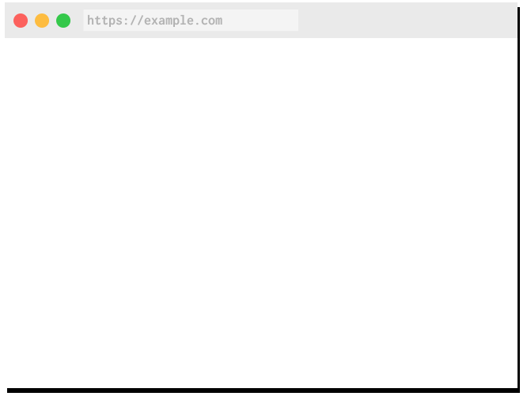

Service Workers
For Party Goers
Pusher
We make it easy to add realtime functionality to your sites/apps
ex. Connecting small buttons to slide decks
Oxford
JSOxford
PHPOxford
PJHSPOxford
Web development
Backend - Responding to http requests
Frontend - Making http requests

var worker = new Worker('script.js')
worker.postMessage({some:data})
worker.addEventListener('message',
m => alert(m + " cats")
)
navigator.serviceWorker
.register('/service-worker.js')
Service workers respond to http requests
Kind of like a backend
Responding
to network requests
self.addEventListener('fetch', e => …
Background Sync
send requests later
self.addEventListener('sync', e => …
Periodic Sync*
Request when the time is right
self.addEventListener('sync', e => …
Push notifications
Initiate interaction
self.addEventListener('push', e => …
Or, not
if('serviceWorker' in navigator)
Thanks!
Ben Foxall
@benjaminbenben